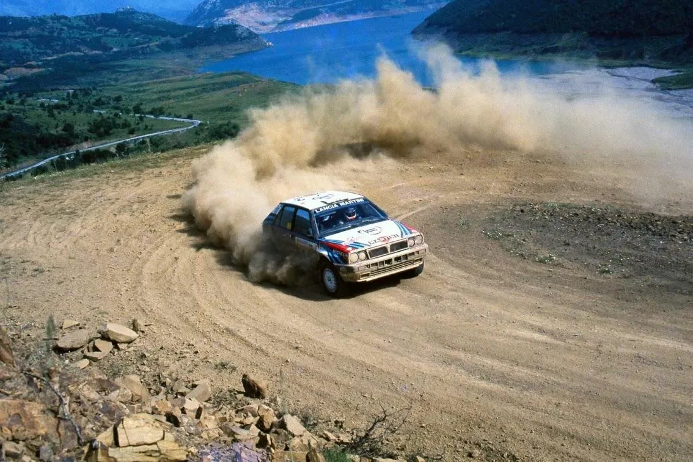
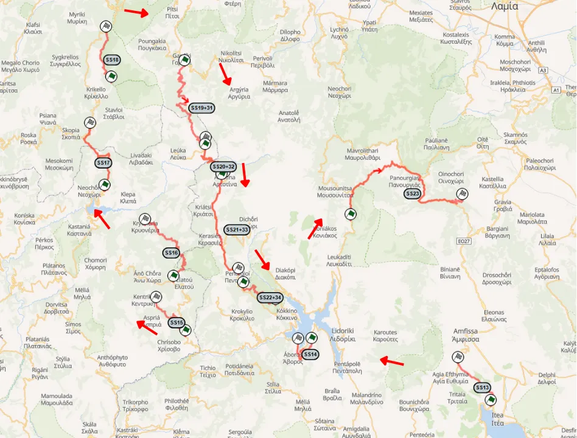
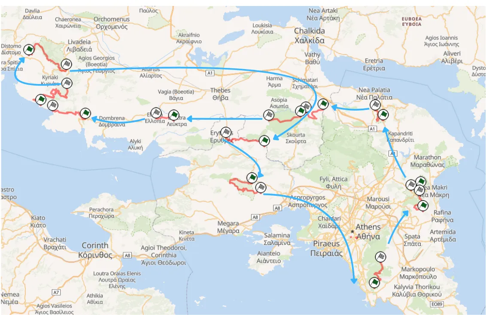
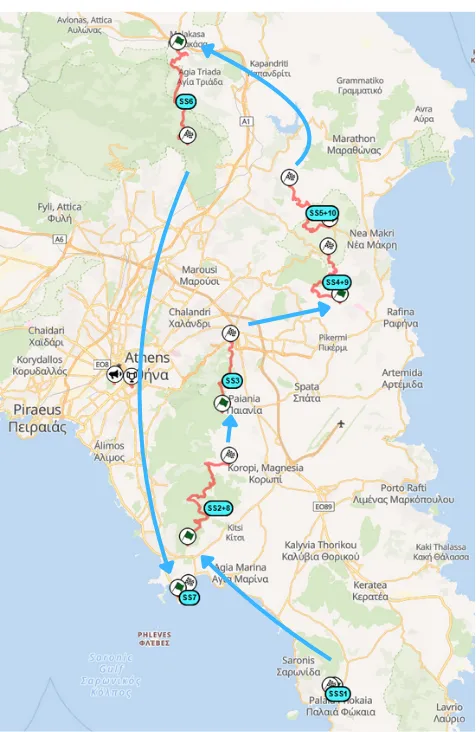
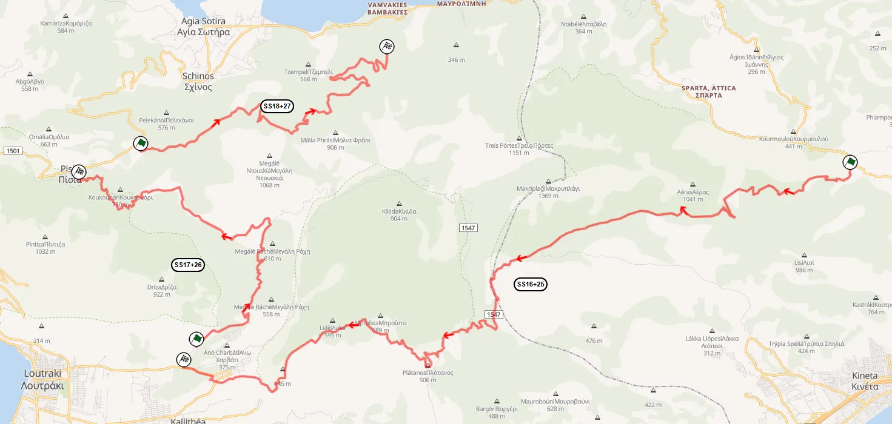
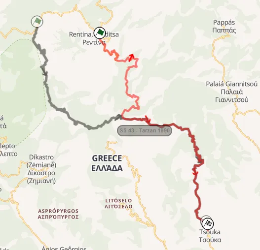
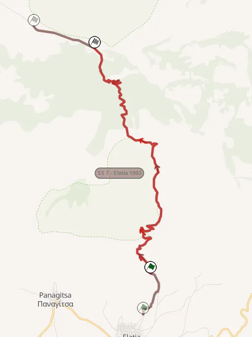
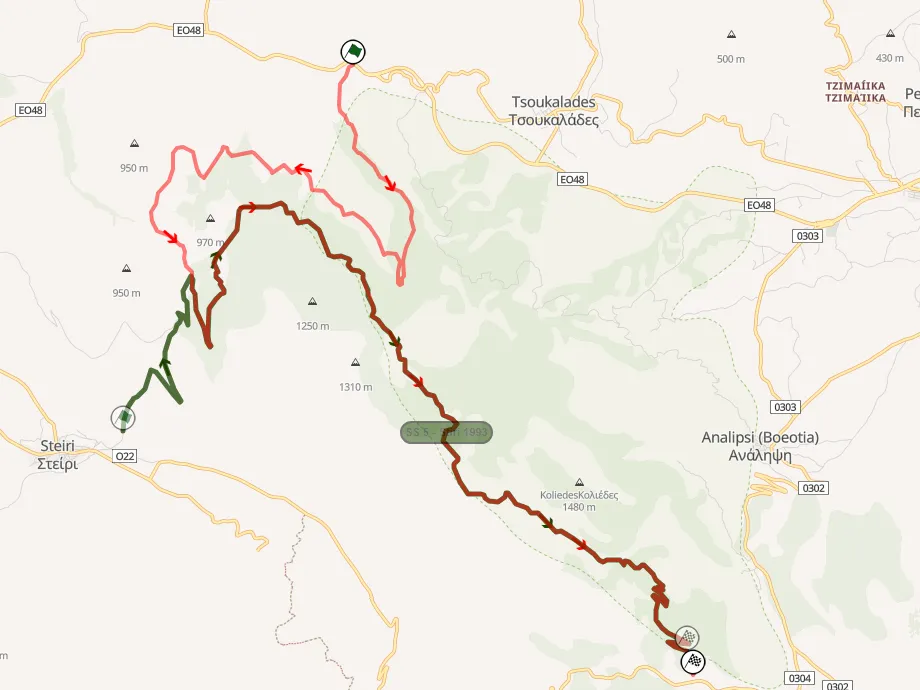
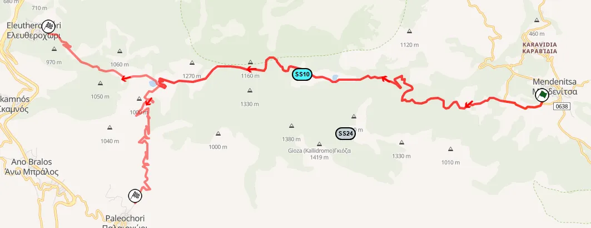

Route History of the Acropolis Rally Part 3: 1987-1994
The dawn of the Group A era was a bummer for most of the hardcore rally fans, as the new cars were slower and a lot less exciting than the Group B monsters had been. As time went on, the cars, and the competition, would become more exciting, and many drivers who are now considered legends of the sport made headlines in the Acropolis Rally.
1987-1988: Evolution from the 1986 itinerary
The 1987 Acropolis itinerary was more of an evolution from 1986. It did see some changes though, notably the addition of the popular SSS in Anavissos, as well as the removal of most of the stages north of Nafpaktos. Almost all of the paved sections were removed for 1987.
The rally started on Sunday with the ceremonial start and the Anavissos SSS. The main event would get underway on Monday with a tour of Attiki just like 1986. It would be the last time SS Loukissia-Platanaki would be run, using the last 6.8km of the stage, i.e. the gravel parts. It was a fairly short day, with just 6 stages, spanning 84.6km
Leg 2 would again be a trip from the capital to Kamena Vourla. A second pass of Dionissos and Ossios Meletios, followed by Prodromos and then Distomo would lead the crews to Itea. SS Assopia was due to be run a second time, but was cancelled due to the muddy conditions. This would also be the last time Distomo would be included in the itinerary under its classic configuration. SS Prodromos was also changed for this year, with its route switching to a road that oversaw the Gulf of Corinth. Distomo would later be used as a testing stage for Toyota Team Europe, and also the Citroen team.
Karoutes would not be included in Leg 2; instead, the crews would head from Bauxites to Doriko and then do a loop of sorts with Limnitsa, Elatovrissi, Arahova, and Domnista following. The rally would then head south with Gardiki, Grammeni Oxia used in Leg 2, not 3 this time, followed by two new stages, Artotina and Pendagioi.
This section of the leg featured stages that began immediately after the completion of the previous ones, with some ending at the entrance of a village and starting again at its exit, resulting in very tight liaisons. The stages themselves were the slowest and most technical of the rally, having many hairpins and sinuous sections.

Map of the second leg of 1987
Rally-Maps.com
Leg 3 was due to start with Moschokaria, but that was cancelled due to road works. The stage would not appear in the Acropolis again. The rally would head north, passing through Makrirahi, before veering west with Rahoula and Neraida, followed by Tarzan. The second pass of Gardiki was cancelled due to the mud, with the cars driving through it just to make it to Grammeni Oxia. Karoutes was the penultimate stage of the rally, with Antikira, the reverse of Prodromos, being the last stage.
For 1988 the itinerary didn’t change much on Monday and Tuesday, with Asopia changing configuration and being used under the name Dafnoula, and the inclusion of SS Klepa which was used as a liaison to get from Elatovrissi to Arahova being the only “big” changes. Arahova and Domnista would be removed.
Leg 3 would also be pretty much the same, with Neraida being extended slightly, and Karoutes returning to its normal configuration, finishing on the tarmac before Bauxites, not Prosilio. The last stage of the rally was a new stage, SS Stiri.
At 526km of stages, this was at the time the shortest Acropolis Rally.
1989-1990: The event expands to 600 km, with stages in mountains around Athens
1989 saw the rally expand for the first time since 1984. The Monday leg would see its stages and distance double, with 12 stages and 166 competitive kilometers.
Vari was a new stage in the south side of the Imittos mountain, with the crews then moving north to Kallitechnopoli, which was SS Dionissos with a different start, and SS Rapendossa, with the latter being narrow and rough. Two new stages were introduced to link the stages of Athens with Dafnoula (reversed and named Klidi for 1989), Milessi and Viliza, after which the loop would not head south to Kineta, instead it would head to Viotia. SS Prodromos was shortened to 14km, with SS Zaltsa using parts of older versions of the stage. Stiri was expanded to 23km. After that the cars would drive back to Attiki for Ossios Meletios and Aghia Sotira.

Map of the first leg of 1989
Rally-Maps.com
Leg 2 would see most of the stages in Attiki and Viotia repeated, with a regroup in Itea after that. This year SS Klepa would not be used, with the crews heading straight from Elatovrissi to Pendagioi and then Sikea, before the overnight halt. This was the last year SS Sikea was used in the Acropolis.
The final day was the same as 1988, with the only exception being that after Stiri there would be a pass of SS Arma, a stage that would never be used again.
In 1990, the rally was extended to over 600 kilometers, marking the last time the event would reach such a distance.
This time, there would also be “proper” stages on Sunday, not just Anavissos. The “Tour of Athens” loop started with the SSS, with Vari and a new stage in Peania, before Kallitechnoupoli and Rapendossa. A full tarmac stage in Agios Merkourios (using most of the old Dhekelia stage in reverse) had to be cancelled due to environmentalists blocking the road. The last stage of the day was a 2km blast in Vouliagmeni, next to the lake with the same name, before the crews made it back to Lagonissi.

The "Tour of Attiki" Leg
Rally-Maps.com
Vari, Kallitechnoupoli and Rapendossa would be used again on Monday, with the rally then heading north of Attiki just like the year before. SS Fihthi was new, and included a big jump. After Agia Sotira, the cars would head south-west to Loutraki, with a loop of 3 stages following. Kineta returned, with Harvati and Pissia being used for the first time. Ironically, Harvati used the route that is associated the most with Pissia, and Pissia used the one associated with Harvati! Both stages were rough and technical, with Harvati’s route being the same as Loutraki in 2025, only in reverse!
Day 3 was a monster 230km leg that started with Dionissos, using parts of Kalitechnoupoli, before revisiting all the stages of the previous day from the north of Attiki to Loutraki. After the second pass of Pissia, the rally would head to Viotia with Prodromos and Zaltsa. It would be the last time either of these stages would be used in the rally. After a pass of Stiri, the crews would travel north to Kastellia, for SS Kastellia and Kaloskopi, using parts of the Sikea stage in reverse. After a first pass of Karoutes (downhill) there would be an overnight halt in Delphi.

Map of the stages around Loutraki
Rally-Maps.com
The last day of the rally would be 189km long, and starting in Delphi, heading north near Karditsa and then returning to Athens. SS Domnista and Arahova would return, with Neraida and Rahoula being ditched for SS Fourna, linking the stages in Evrytania with Tarzan. Gardiki, Grammeni Oxia and Pendagioi would be followed by Karoutes, with the last stage of the rally being Stiri.
SS Makrirahi was not used in 1990, meaning from now on, no stage has been used in every edition of the event. The 1990 version was won by Carlos Sainz, the Spaniards first ever WRC win.
1991: The last time the ferry was used
For 1991, things would change yet again. Most of the stages in Attiki would be abandoned and not visited again, which was a sigh of relief for the teams, as they were car breakers. After a pass of Anavissos on Sunday, the crews would head south to the Peloponnese for the first time since 1985, with stages in Corinth and Argolis, all of which were brand new, and faster than the average Acropolis test, with the slowest one being SS Galataki with an average speed of 86.21km/h.
None of the stages would ever be used again, minus parts of SS Mycenae. It also saw the popular ferry return for the last time, with the crews heading from Corinth to Eratini near Itea, not Athens, for an overnight halt.
Tuesday would be a monster 260km day, with 21 stages. From Itea, the teams would move north to Lamia, and then to Makrirahi, and would then move south, with Anavra and Smokovo returning. The rest of the loop would use stages in Aetolia and Evritania, only in reverse direction from previous years. After Doriko and Karoutes there would be another overnight halt in Eratini. The next leg would start with Bauxites and then be the same as the previous one up until Smokovo. Then Tarzan would follow, with Gardiki, Grammeni Oxia and Pendagioi following, after which Karoutes and Stiri would be the last stages of the event.
1992-1993: Opening day changes, but the rest remains the same
The 1992 edition of the event again saw changes on the opening day. On Sunday after the Anavissos SSS, there would be four stages in the west of Attiki and near Loutraki, namely Mandra, Kineta, Harvati and Kitheronas, the last one being brand new and very very rough and rocky, but also generally quite fast. This effectively made the rally a 4-day spectacle again.
Leg 2 would start from Delphi, and would be similar to that of 1991, with the competitive action starting in Hani Zagana and then moving north with Pavliani (Koumaritsi), Arhani, Asvestis and Makrirahi, after which it would turn south with Anavra and Smokovo.
Tarzan would see changes for the first time in almost a decade, with the start being moved from Tarzan’s hut to Rendina.
The crews would then follow the stages in Aetolia and Evritania just like 1991, with a pass of Karoutes leading them to Delphi for the overnight halt.
Tuesday would start with three stages near Itea, Bauxites, Pente Oria and Prosilio before heading north. SS Pira used the second half of the classic Pavliani stage, and SS Anatoli used the final few kilometers of the modern Pyrgos/Dafni test.

The old Tarzan (gray) compared to the one used in 1992 (red)
Rally-Maps.com
Following a pass through Gardiki, Grammeni Oxia and Pendagioi, SS Diakopi would be tackled for the first time, the finish of which was just to the north of the Mornos lake, with SS Koniakos being the last of the day.
The last leg of the event would be made of repeat runs of stages used on Monday and Tuesday, starting from Itea and looping with Gardiki and Grammeni Oxia before a run of Karoutes and Stiri.
1993 would yet again see the rally have a new format for the opening day. The popular SSS in Anavissos would not feature, and instead the crews would tackle the same stages to the west of Athens, before heading north to Viotia and Fthiotida. Stiri would be used on Day 1, with two classic stages making their “modern” debuts, Elatia and Eleftherohori.
Elatia would use the Elatia-Rengini stage extended from the start and finish, whereas Eleftherohori would be the classic stage, only in reverse, starting from the cemetery in Mendenitsa.

The old stage (gray) compared to the modern day one (red)
Rally-Maps.com
Following these two stages, Inohori and Kaloskopi would follow before a pass through Karoutes. This version of Kaloskopi was used for the first time, and started from the village of Kaloskopi, finishing in Stromi. Kaloskopi and Inohori would also be merged and run as one stage in the future.
Leg 2 would be the same as last year, with cars starting from Itea, moving north to Makrirahi and Anavra before heading south again with Tarzan and the stages in Evritania.
Leg 3 would again start with stages in Itea, before heading north. SS Mavrolithari was Pavliani in reverse, and was the only new stage of the day. The crews would tackle the same tests as 1992 before a run of Karoutes and Karakolithos. The latter used most of the Stiri route, but had a new start, with uphill hairpins and big drops on one side.

Karakolithos (red) and Stiri (green)
Rally-Maps.com
1994: More stages near Kamena Vourla, less around Itea
The event would yet again change format for 1994, using less stages around Itea, with the route becoming more compact. Bauxites would be a notable omission from the event’s itinerary.
Day 1 would not visit Kineta and Harvati, instead having three stages to the west of Athens. Veniza was a new stage, and was an absolute car breaker, and had a nice fast downhill section that led to Psatha. Two new stages would be added, Panagia and Evangelistria, linking the Attiki stages with Stiri. Panagia would have a series of hairpins near the finish with steep drops, and Evangelistria would use parts of the modern day Livadia stage.
Speaking of Livadia, a stage with the same name would be used for the first time, with the finish being near the Tsoukalades village. This route is used to this day in local rallies.
After a regroup in Livadia, Elatia, Karavidia and Eleftherohori would round off the day. The latter two would also be used on the final day of the rally, with Eleftherohori finishing in Paleohori for the second run, with this section being technical, with downhill hairpins.

The two versions of Eleftherohori used in 1994
Rally-Maps.com
Day 2 started from Kamena Vourla, with the first loop heading north to Anavra, with Nea Giannitsou, Makrirahi, Anavra, Aidonohori and Tarzan following, before a regroup in Platystomo.
For 1994, the finish of Tarzan was changed, with the stage now finishing in Giannitsou and not Tsouka, meaning the roughest part of the stage was gone, and not used again.
The second loop would see the crews move south-west to the usual stages in Evritania and Aetolia. SS18 Nea Krioneria was especially rough and sinuous, using sections from Klepa and Elatovrissi. After Pendagioi and Diakopi, a new stage SS Athanassios Diakos would follow, before the last stage of the day which was Mavrolithari.
The last day of the rally would again start from Kamena Vourla and head north-west with Kaloskopi, Athanassios Diakos, Anatoli and Perivoli leading the cars to Gardiki, Grammeni Oxia and Pendagi. Karoutes and Karakolithos would again be the last two stages of the rally.
At just over 500 km, this was the shortest Acropolis Rally at the time.
For 1995 the event would not be part of the WRC calendar for the first time since 1974, instead only being included in the F2 Cup, thanks to the FIA's rotation system.
Stages used every year from 1987 to 1994
- Karoutes
- Tarzan
- Gardiki
- Grammeni Oxia
- Pendagioi
Percentage of entries that finished the rally
1987: 36.8%
1988: 44.1%
1989: 41.2%
1990: 35.1%
1991: 37.6%
1992: 46.4%
1993: 49.5%
1994: 40.9%
Most common rally opening stage
Anavissos - 6 times
Most common rally ending stage
Stiri - 4 times


Comments